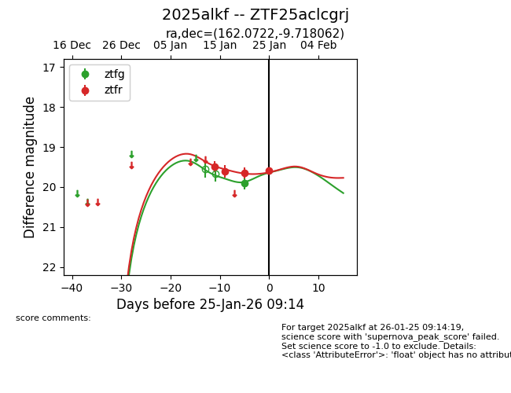
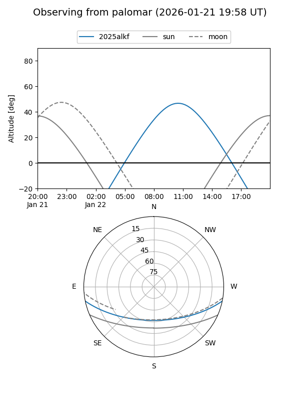

2025alkf
Target 2025alkf at 2026-01-22 10:21
Aliases and brokers:
FINK: link
Lasair: link
ALeRCE: link
TNS: link
YSE: link
alt names
ZTF25aclcgrj (ztf,fink_ztf)
2025alkf (tns,yse)
Coordinates:
equatorial (ra, dec) = 162.0722,-9.71806
equatorial (HMS+DMS) = 10:48:17.32,-09:43:05.02
galactic (l, b) = (259.6832,+42.58035)
Flags:
Photometry:
last ztfg=19.91, ztfr=19.64
1 ztfg, 3 ztfr detections
Lightcurve

Visibility


Additional plots